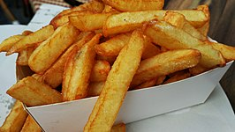

Patat
De naam van friet of patat is afgeleid van de woordcombinatie patates frites; Belgisch-Frans voor 'gefrituurde aardappelen'. In Vlaanderen wordt meestal van friet, frieten, frietjes en soms ook fritten gesproken, in de drie zuidelijke provincies van Nederland en in het zuiden van Gelderland spreekt men van friet of frites, in de rest van Nederland wordt vaak het woord patat gebruikt. Het gebruik van het woord "patat" kan in Vlaanderen, Zeeland, Nederlands Limburg en Noord-Brabant verwarring veroorzaken, bij de eerste twee omdat het woord daar "aardappel" of "klap/slag" betekent en in de laatste gevallen omdat het woord er niet of nauwelijks gebruikt wordt.
In Frankrijk noemt men frieten pommes frites. Amerikanen spreken van French fries, een term die voor het eerst in 1856 in druk voorkomt in het kookboek Cookery for Maids of All Work door E. Warren. Deze vertaling zorgt echter voor verwarring, aangezien ze aan lijkt te duiden dat frieten oorspronkelijk Frans zijn. De benaming komt echter van het Oudengelse werkwoord to french, wat in de lengte doorsnijden betekent. In de rest van de Engelstalige wereld wordt meestal over chips gesproken. Duitstaligen hebben het over Pommes (frites).

Bron